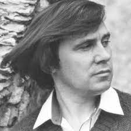
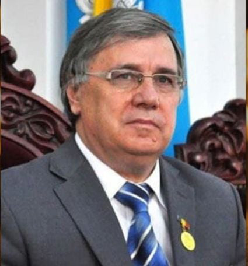
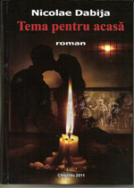
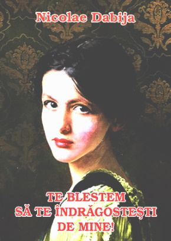
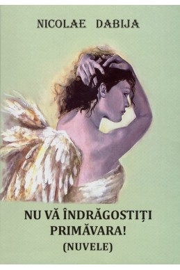

NICOLAE DABIJA
Date biografice
Publicatii

Nicolae Dabija (n. 15 iulie 1948, Codreni, raionul Cimislia, RSS Moldoveneasca, URSS – d. 12 martie 2021, Chisinau, Moldova) a fost un scriitor, istoric literar si om politic din Republica Moldova, membru de onoare al Academiei Romane (din 2003) si membru corespondent al Academiei de Stiinte a Moldovei (2012). Nicolae Dabija, de nationalitate romana si religie ortodoxa, este nepotul arhimandritului Serafim Dabija, un duhovnic roman deportat in Gulag in 1947. In anul 1966 este inmatriculat la facultatea de Ziaristica a Universitatii de Stat din Moldova. In anul III a fost exmatriculat „pentru activitate proromaneasca si antisovietica”, fiind restabilit peste un an, in 1970, la Facultatea de Filologie. In 1972 a absolvit universitatea. A fost membru al PCUS. In calitate de redactor sef al saptamanalului „Literatura si Arta” editat de Uniunea Scriitorilor din Republica Moldova, a avut un rol important in lupta de renastere nationala din Republica Moldova de la sfarsitul anilor '80. In perioada de glorie, saptamanalul „Literatura si Arta” depasea tirajul de 260.000 de exemplare. La 9 martie 2021 Nicolae Dabija a fost internat la Institutul de Medicina Urgenta din Chisinau, fiind diagnosticat cu COVID-19. Pe data de 12 martie 2021 a decedat. A fost inmormantat la Cimitirul Central din Chisinau.


Opere
- Ochiul al treilea, poeme, 1975
- Apa neinceputa, poeme, 1980
- Povesti de cand Pasarel era mic, poem pentru copii, 1980
- Pe urmele lui Orfeu, eseuri
- Zugravul anonim. poeme, 1985
- Antologia poeziei vechi moldovenesti, 1987
- Aripa sub camasa, 1989
- Mierla domesticita, poeme, 1992
- Dreptul la eroare, poeme, 1993
- Lacrima care vede, poeme, 1994
- Libertatea are chipul lui Dumnezeu, eseuri, 1997
- Cerul launtric, poeme, 1998
- Icoana sparta, Basarabia, eseuri, 1998
- Intre dragoste si moarte, poeme, 1998
- Poezia, bucuroasa tristete, poeme, 1998
- Harta noastra care sangera, eseuri, 1999
- Vai de capul nostru, eseuri, 2001
- Insemnari de pe front, eseuri, 2002
- Raul in cautarea marii, eseuri, 2003
- Basarabia, tara de la raspantii, 2004
- De ce limba noastra e romana, eseu, 2007
- Tema pentru acasa, roman, 2009
- Te blestem sa te indragostesti de mine, roman, 2017
- A doua venire